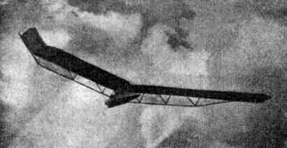
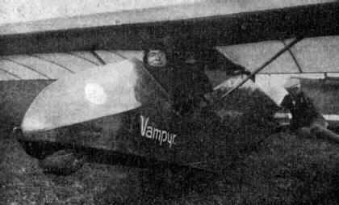

|
Inicio
Bibliografía
Noticias
Hangar
Actividades
Cursos
Comisión
Fotos
Videos
Ubicación
Contáctenos
Links
|
|
Manual del Vuelo a Vela
Wolf Hirth - 1942
HISTORIA DEL VUELO A VELA
por GEORG BRÜTTING
2º Sección
En el concurso del año 1921 hubo ya treinta y tres participantes, los cuales sobrepasaron, en
muchos vuelos, lo conseguido en los primeros años. Sin embargo, las mejores marcas fueron
alcanzadas después del concurso: Klemperer voló, el 30 de agosto, en 13 minutos, 5
kilómetros en el valle de Gersfeld. Martens consiguió, pocos días después, 7,5
kilómetros en sus buenos 15 minutos, y, al otro lado, en Heidelstein, venía
ejercitándose con intervalos, desde 1914, Harth, aparejador del Estado, de Bamberg, el
cual, el 13 de septiembre consiguió volar más de 21 minutos con su monoplano de propia
construcción, después que ya, en 1916, habla volado a vela 3,30 minutos, es decir,
había conseguido por primera vez elevarse sobre el lugar del envuelo, volviendo luego a
aterrizar junto al sitio de salida.

Fig. 3. Leusch en el aparato "Weltensegler", en el concurso del Rhön, en 1921.
Este velero del tipo sin cola, construido por el doctor Friedrich Wenk,
hizo ya un vuelo a vela en agosto de 1920, en el Feldberg de la Selva
Negra.
En estos primeros años también se registraron éxitos en el sur de Alemania: el doctor Friedrich
Wenk había seguido un camino enteramente nuevo con su tipo « Weltensegler» (fig. 3),
sin cola y, por primera vez, con alas de diedros marginales, tipo que luego, diez años
más tarde, apareció otra vez. Peschkes, entre otros, hizo con él en agosto de 1920 un
vuelo en ocho, en el que empleó 2 minutos; lástima que estos ensayos tan prometedores se
abandonaran más tarde.
Y, sin embargo, en los años 1920 -1921 se hicieron
tentativas generales; estos primeros concursos dieron lugar a muchas iniciativas y
proporcionaron, con sus experiencias y resultados, directrices para el trabajo de los
años venideros. En primer lugar, se concretó una característica de puro tipo
constructivo, que despejó el camino para el progreso efectivo del vuelo a vela; puesto
que el vuelo a vela representa el aprovechamiento de las ascendencias que existen en el
aire, los veleros capaces de conseguir marcas se deberán caracterizar, ante todo, por una
pequeña velocidad de descenso que haga posible el aprovechamiento para el vuelo a vela de
los movimientos ascendentes del aire, por débiles que sean. Georg Madelung prestó al
vuelo a vela el servicio de haber mostrado el camino para la construcción de veleros con
pequeña resistencia al avance, que es la condición para obtener la pequeña velocidad de
descenso deseada, en cuanto que proporciona el coeficiente de planeo suficiente para ello;
el aparato "Vampyr" proyectado por Georg Madelung en 1921, fue el primer velero de
esta clase y el modelo para el progresivo desarrollo del velero de concurso. "Vampyr"
era un monoplano de ala alta volada, con fuselaje cerrado de contrachapado y una
envergadura de 12,6 m. (fig. 4).
Apoyándose en la experiencia conseguida por la práctica,
se llegó pronto a construir veleros notablemente mejorados, en cuanto a condiciones
aerodinámicas; los pilotos estaban más ejercitados y el terreno de la Wasserkuppe era ya
conocido por la mayor parte. Éstas fueron las razones para el progreso, casi brusco, que
representaron los éxitos del año 1922, el cual constituye el primer punto culminante de
esta etapa, tanto en el aspecto deportivo como en el científico.
Para especial estímulo de los aficionados al vuelo a
vela, se habla instituido un premio importante para el vuelo de duración mínima de 40
minutos, regreso al punto de salida y, de allí, realizar un vuelo de distancia en línea
recta de 5 Km. Las condiciones eran
extraordinariamente difíciles y era creencia general que este "Premio Industrial"
quedaría desierto en aquella ocasión. En la tarde del 18 de agosto de 1922 despega el
hanoverano Martens en "Vampyr"; vuela a vela durante más de 50 minutos a 100 m. de
altura entre la Wasserkuppe y el Pferdskopf; emprende, a continuación, el vuelo de
distancia y aterriza en el valle, después de recorrer 9 Km. y de haber volado, en total,
1 hora y 6 minutos. ¡Se había conseguido la primera hora de vuelo sin motor! La
comunidad de pilotos de velero, que en aquel anochecer de agosto no podía aún sospechar
el efecto que este vuelo de una hora había de hacer en el mundo y sus consecuencias para
el futuro, estaba llena del más justificado regocijo. Aun mayor fue el júbilo cuando, al
día siguiente, el compañero de estudio de Martens, Hentzen, todavía llegó a volar 2
horas y 10 minutos sobre el macizo de la Wasserkuppe y, cinco días después, el 24 de
agosto, esa marca se consolidaba con las 3 horas y 6 minutos de vuelo, para aterrizar en
los alrededores cuando era ya entrada la noche. Hogueras de alegría ardieron en la
Wasserkuppe; el "alma del Rhön", Ursinus, a quien sus amigos dieron este día ese
nombre de honor, ensalzó las almas de los precursores alemanes, y precisamente entonces
cuando la patria debía soportar la crisis más honda de su vida económica, aquella
juventud de la Wasserkuppe cantó íntimamente y en voz alta, lejos de este mundo y de su
espíritu, la canción de Alemania.
Pero las marcas conseguidas llegan a los oídos del mundo
y el vuelo sin motor, hasta entonces poco apreciado y, en parte, tomado a burla, recibe la
primera prueba de estimación.
Estos días de la Wasserkuppe quedarán impresos para
siempre en los anales del vuelo a vela y dieron justo motivo para que, un año más tarde,
en el monumento a los aviadores, que se erigió en la ladera occidental para recuerdo de
los camaradas caídos y exhortación de la juventud, se escribiesen estos versos:
Nosotros, aviadores caldos, fuimos vencedores sólo
por nosotros mismos
¡Pueblo! Vuela tú otra vez, y serás también
vencedor,
sólo por ti mismo.
Estas primeras horas de vuelo sin motor de Hentzen, Martens y Hackmack, en agosto de 1922,
fueron las segundas marcas que en los primeros años del vuelo a vela produjeron estímulo
extraordinario; hubo necesidad de tres concursos para acumular experiencias técnicas y de
vuelo que aseguraran efectividad al vuelo sin motor, conservando altura. Aquel día 18 de
agosto de 1922, en el que se consiguió la primera hora de vuelo sin motor, se puede mirar
hoy como la primera fecha decisiva en el progreso del vuelo a vela.

Fig. 4. Hentzen en el "Vampyr 1"
De todo el mundo llegaban ahora visitantes a la Wasserkuppe, veían con gran complacencia el vuelo a vela y en su patria ponían en actividad organizaciones parecidas, empezando así el gran
movimiento de vuelo sin motor más allá de las fronteras de Alemania. Tanto en las
laderas francesas (Vauville, en Cherburgo) como en las inglesas (Itfordhill, en la costa
meridional) y africanas (Biskra), se llevaron a cabo vuelos con buenas marcas que, en
parte, hasta superaron las ya obtenidas, como sucedió con las de duración, pues
Maneyrol, Thoret y Barbot mejoraron la marca mundial, llegando a las 8 horas y 36 minutos,
y Deskamps y Auger, en 1925, la de altura, consiguiendo los 720 m. sobre el punto de
salida. El establecimiento de los principios constructivos de los veleros; la demostración
de la posibilidad de aprovechar, para el vuelo humano, la energía natural del movimiento
del aire y la resolución del problema del vuelo a vela sobre una ladera, utilizando la
ascendencia del aire (Ver Nota), constituyeron el jalón marcador del primer período del
desarrollo del vuelo sin motor, que comprende los años 1920 a 1925. Este período se
cerró con una grave crisis, originada por el gran desencanto que se tuvo ante la falta de
nuevas ideas sobre el vuelo a vela, que no correspondía a las grandes esperanzas que se
habían concebido sobre los éxitos de Martens y Hentzen en 1922, a lo que se añadió el
que, incluso en Alemania, muchos pensaron, hasta 1924, que el vuelo a vela era sólo un
sustitutivo del vuelo con motor, y muchos pilotos de velero al declararse otra vez libre
el vuelo con motor volvieron a éste y abandonaron el vuelo a vela.
Nota: Conviene aclarar el concepto que representa y el significado que en esta obra se atribuye a la palabra ascendencia. Se ha tomado
un vocablo derivado del verbo ascender (del latín ascendere) en su sentido
directo, es decir, significando subir y de modo que, además de representar la acción del
verbo, signifique la propiedad de que exista esa acción, por lo que se ha tomado el
sufijo encia, que es el que se acomoda a ese significado resultando la palabra
citada: ascendencia, que quiere decir no la serie de antepasados de un ser como
segunda acepción de uso corriente, sino también el lugar, sitio y zona de la atmósfera
en donde el aire tiene movimiento de ascensión o ascendente, así como ese movimiento
mismo. En sentido análogo respecto a la propiedad opuesta, se empleará la palabra
descendencia.
La necesidad de usar una sola palabra para sustituir a una frase: "zona donde existen movimientos
ascendentes del aire", hizo que el que esto escribe usase ya la palabra ascendencia
desde 1924, cuando se ocupó de nuevas teorías de Meteorología, en las que el fenómeno
en cuestión desempeñaba el principal papel, y desde entonces ha venido usando el mismo
término en las numerosas referencias y escritos suyos sobre Meteorología y Vuelo sin
motor y, en particular, en su obra original, que precisamente con ese título apareció
en 1935. -N. del T.
Esta crisis se venció porque se
pudo comprobar que el vuelo a vela no era un sustitutivo del vuelo en avión, sino que
ocupaba un lugar propio en la aviación, que se justifica por su importancia en la
formación de pilotos y por su valor único para la experimentación científica y
técnica, resultando así ser un destacado componente del conjunto que forma la
Navegación aérea. Este resultado se debe indiscutiblemente al profesor Georgii, el guía
eminente del vuelo sin motor, que con sus investigaciones abrió enérgicamente un nuevo
camino al vuelo a vela, conduciéndole a un nuevo grado de ensalzamiento, que dio lugar a
que la pausa a que se había llegado se convirtiese, desde 1926, en un progreso
arrollador. Ya desde 1923 se habían abierto al vuelo sin motor nuevos terrenos: en
Rossitten, sobre la bahía de Curlandia en la Prusia oriental y en Grunau, en los Montes
Gigantes. Estos retoños dieron lugar también a escuelas de vuelo propias y a una
cuidadosa formación de pilotos. La Sociedad Rhön-Rossitten, que se fundó precisamente
en los tiempos de la grave crisis del vuelo sin motor, gracias a la construcción adecuada
de veleros de escuela y de concurso, con arreglo a un plan, así como a la investigación
científica de las posibilidades de vuelo a vela, marcó el camino que debía seguirse
para darle nuevo auge.
|